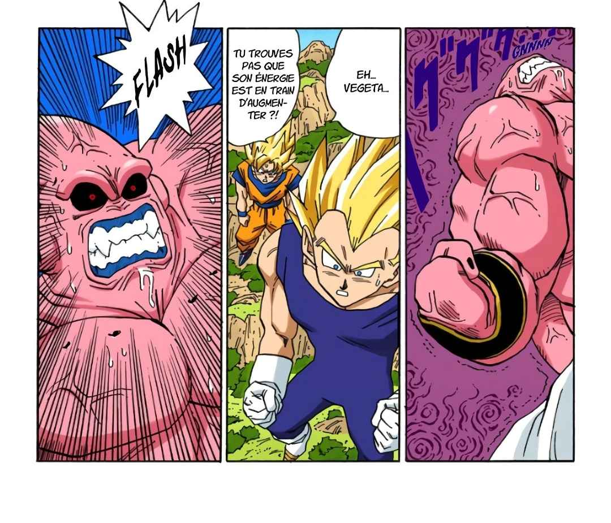
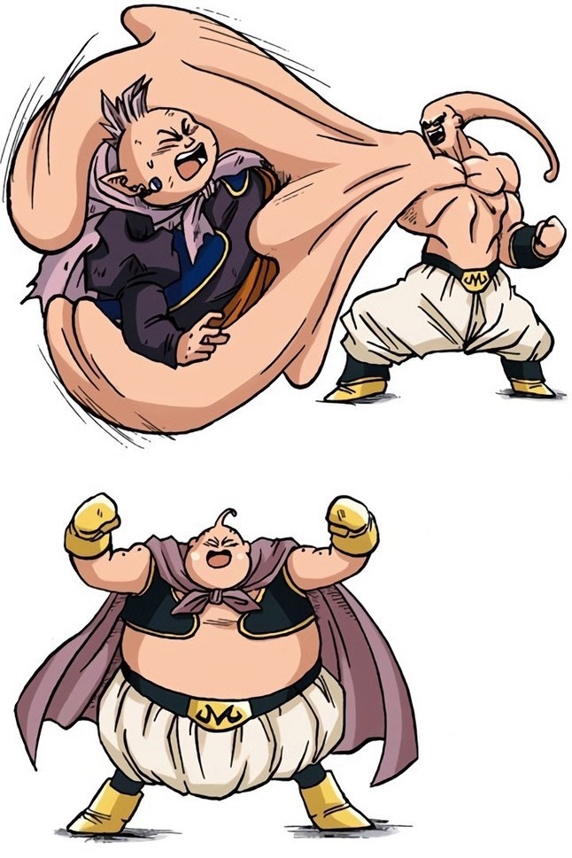

Ultra Buu : le chaînon manquant entre Super Buu et Kid Buu
Ultra Buu est une forme extrêmement éphémère — quelques cases dans le manga — qui apparaît dans la transition entre Super Buu et Kid Buu. Loin d'être une erreur ou un détail anodin, elle est la clé de lecture de toute la logique de l'arc Buu.
L'ordre des transformations
La séquence des formes de Buu dans le manga suit une logique précise que l'on comprend mieux en la posant à plat. Buuhan (Super Buu ayant absorbé Gohan) est la forme la plus puissante. Lorsque Goku et Vegeta, à l'intérieur de Buu, libèrent les absorbés un par un, chaque retrait modifie le monstre.
C'est à ce moment qu'apparaît Ultra Buu : une version sensiblement plus musclée et plus grande que Kid Buu, mais distincte de Super Buu. Cette forme ne dure que quelques instants avant que Buu ne se stabilise en Kid Buu.


Gauche : la séquence de transformation dans le manga original. Droite : le Buu gentil, né de l'absorption du Dai Kaiōshin.
Pourquoi Ultra Buu existe-t-il ?
La réponse la plus cohérente est qu'Ultra Buu sert à représenter la disparition progressive des influences des Kaiōshin absorbés. À l'origine, le Kid Buu primordial avait absorbé le puissant Kaiōshin du Sud.
Cette absorption avait augmenté la masse musculaire et la puissance brute de Kid Buu, le rendant plus imposant physiquement que sa forme finale.
En absorbant ensuite le Dai Kaiōshin — un être bon et doux — Kid Buu avait paradoxalement vu sa violence et son instinct destructeur tempérés, donnant naissance au Buu gentil.
Lorsque le Buu gentil est retiré par Vegeta, il est logique que l'influence du Kaiōshin du Sud réapparaisse momentanément : le Buu originel retrouve d'abord l'état qu'il avait avant d'absorber le Grand Kaiōshin, c'est-à-dire un Buu qui avait déjà absorbé le Kaiōshin du Sud — soit une forme plus musclée. C'est Ultra Buu.
La disparition de cette forme pour laisser place à Kid Buu marque alors la dissolution complète de toutes les influences extérieures — le retour au Buu originel, primaire et incontrôlable.
Une solution narrative indispensable
Au-delà de la cohérence interne du lore, Ultra Buu remplit une fonction narrative pratique cruciale : atténuer le choc visuel et logique d'une baisse de puissance que le lecteur ne peut pas accepter brutalement.
Si après Super Buu l'auteur avait directement montré Kid Buu, la diminution de puissance aurait été brutale et incompréhensible. Jusqu'alors, chaque transformation de Buu le rendait plus fort. Le lecteur est conditionné à lire une perte d'absorption comme un affaiblissement.
Ultra Buu matérialise la transition physiquement : le corps encore musclé montre que quelque chose de puissant reste, avant de se rétracter. Le lecteur voit le changement se faire en deux temps, ce qui lui laisse le temps d'intégrer la logique.
La transition devient lisible. Ultra Buu sert de sas de décompression narrative entre la forme la plus puissante de Buu et sa forme finale — pourtant présentée comme la plus dangereuse pour d'autres raisons (instinct pur, imprévisibilité totale).
La contrainte rétroactive de Toriyama
La genèse d'Ultra Buu révèle une contrainte que Toriyama s'est imposée — ou qui lui a été imposée par la logique de son propre récit. Non seulement il fallait faire baisser Super Buu en puissance pour que Goku et Vegeta puissent continuer à se battre, mais il fallait le faire de manière crédible.
- Première absorption (boost) : Kaiōshin du Sud → augmente la puissance brute de Kid Buu, crée Ultra Buu.
- Deuxième absorption (nerf) : Dai Kaiōshin → tempère la violence, crée le Buu gentil, réduit l'instinct destructeur global.
- Super Buu : Buu gentil + absorptions de guerriers (Gotenks, Piccolo, Gohan) = forme ultime mais instable.
L'auteur a donc été obligé de créer ces deux absorptions rétroactivement pour justifier les différences de niveau entre les formes :
Un unique nerf sans boost préalable aurait donné un « Buu Gris » sans logique interne.
Un unique boost aurait produit un adversaire plus fort que Super Buu — impossible à battre sans escalade infinie.
Les deux absorptions combinées donnent un Kid Buu dans la tranche de puissance de Goku SSJ3 — soit un adversaire gérable.
Ultra Buu est donc le témoin visible de ce calcul d'auteur : la forme musclée qui prouve que le boost a bien existé, avant que le retrait du Dai Kaiōshin ne ramène Buu à son équilibre final.
Conclusion
Ultra Buu concentre en quelques cases manga une quantité remarquable d'informations narratives et de lore. Forme éphémère par nécessité, elle remplit trois fonctions simultanées :
- Attestation visuelle de l'existence du Kaiōshin du Sud dans l'histoire de Buu.
- Transition lisible entre la puissance de Super Buu et la nature de Kid Buu.
- Preuve du travail rétroactif de Toriyama pour rendre son système de pouvoirs cohérent.